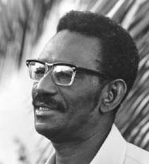
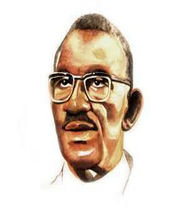
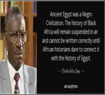

“Life and Career

Born on December 29, 1923, in the village of Caytou located in the region of Diourbel, Senegal (approximately 150 km South of Dakar), Cheikh Anta Diop was born to an aristocratic Muslim Wolof family in Senegal where he was educated in a traditional Islamic school.
After koranic, followed by primary and secondary French-school studies in Senegal, at the age of twenty-three, he journeyed to Paris, France to continue advanced studies in physics, phylosophy, chemestry, history, linguistic, and anthropology in 1947.He was drawn deeper and deeper into studies relating to the African origins of humanity and civilization.
Professor Cheikh Anta Diop was a Senegalese a thinker, anthropologist, and scholar who is most renowned for scientifically proving that ancient Egyptians were Black, at a time when this was not accepted by mainstream academia, as well as his original research on pre-colonial Africa. He was a tireless a militant of Africa’s integration and renaissance.should be considered as one of the greatest scientists after Darwin, as he demonstrated that Africa was the cradle of humanity; that everything started in Africa, and that Egypt and modern day Africans descended from the same ancestors, in other words, were the same people. Before Cheikh Anta Diop, the world, and Africans in particular, had been taught that Africa was nothing, and that Egypt and Egyptians were not Africans… that the great Egyptian civilization which gave so much to the world, could not have come from the dark brown Africans. Europeans refused to admit that although in Africa, Egyptians could be Africans i.e. Black, or rather believed that Blacks were so backwards that their ancestors could not have possibly made the great pyramids of Giza or the great sphinx. Well Cheikh Anta Diop proved them all wrong!
His initial doctoral dissertation submitted at the University of Paris, Sorbonne in 1951, based on the premise that Egypt of the pharaohs was an African civilization was rejected. Regardless, this dissertation was published by Presence Africaine under the title Nations Negres et Culture in 1955 and won him international acclaim.
Two additional attempts to have his doctorate granted were turned back until 1960 when he entered his defense session with an array of sociologists, anthropologists and historians and successfully carried his argument. After nearly a decade of titanic and herculean effort, Diop had finally won his Docteur es Lettres! In that same year, 1960, were published two of his other works the Cultural Unity of Black Africa and and Precolonial Black Africa.
He was described as "Pharaoh of knowledge"
“Politic
Cheikh Anta Diop was not only an intellectual, he also had a past as a man of action who did not hesitate to embrace political militantism when he judged it necessary. It was in that regard that he published scathing and brilliant articles in "La voix d'Afrique", a journal of students of the RDA (Rassemblement Democratique Africain). One of his articles appeared in February, 1952, and already he had put (at an epoch where most African parliamentarians opted for a policy of compromise - not to say betrayal) on the agenda the question of independence and the federation of the ex-colonies. One sees it, the political doctrine of Cheikh Anta Diop, consigned to "the economic and cultural foundations", having as a philosopher's stone the notion of unity under its federal or confederal; form. A certain number of factors converged to render indispensable a political unity: the imperatives of economic independence, industrial development, the inconstances of political entities issuing from colonialism, and the cultural unity of Black Africa.He received, with William Eduar Burghardt du Bois, the African-American academic and founding member of The National Association for the Advancement of Colored People (NAACP), the Award of the 1st World Festival of Negro Arts in 1966, rewarding the writer who had exercised the greatest influence in Negro thought in the XXth century.Becoming more and more active in the African student movements then demanding the independence of French colonial possessions, he became convinced that only by reexamining and restoring Africa’s distorted, maligned and obscured place in world history could the physical and psychological shackles of colonialism be lifted from our Motherland and from African people dispersed globally.
At the age of 12 he was reported to be developing an universal "African" alphabet.
“Quotes
 “The generation that followed did not have the same concerns; none of its members attempted to follow the example of the past generation. There was no longer anyone with the noble determination to get to know the great men of the world, or if there were some individuals consumed with this curiosity, they were few in number. From then on, there remained only vulgar minds given over to hatred, envy and discord, who took an interest only in things which did not concern them, gossip, slander, calumny of one's neighbors, all those things which are the source of the worst of our troubles.”
“The line of ill-intentional Egyptologist, equipped with a ferocious erudition , have commited their well known crime against science, by becoming guilty of a deliberate falsification of the history of humanity. Supported by the governing powers of all the Western countries , this ideology, based on a moral and intellectual swindle, easily won out over the true scientific current developed by a parallel group of Egyptologist of good will, whose intellectual uprightness and even courage cannot be stressed stronly enough.The new Egyptological ideology , born at the opportune monment, reinforced the theorectical bases of imperialist ideology. That is why it easily drowned out the voice of science, by throwing the veil of fasificacation over historical truth. This ideology was spread with the help of considerable publicity and taught the world over, because it alone had the material and financial means for its own propagation.Thus imperialism, like the prehistoric hunter, first killed the being spiritually and culturally, before trying to eliminate it physically. The negation of the history and intellectual accomplishments of Black Africans was cultural, mental murder,which preceded and paved the way for their genocide here and there in the world.” Cheikh Anta Diop, Civilization or Barbarism: An Authentic Anthropology
“Only a loyal, determined struggle to destroy cultural aggression and bring out the truth, whatever it may be, is revolutionary and consonant with real progress; it is the only approach which opens on to the universal. Humanitarian declarations are not called for and add nothing to real progress.”
“If modern civilization should disappear today, but leave libraries untouched, survivors could open almost any book and perceive immediately that persons living south of the Sahara are called “Blacks.” The term “Black Africa” would suffice to indicate the habitat of the Black race. Nothing similar is found in Egyptian texts. Whenever the Egyptians use the word “Black” (khem), it is to designate themselves or their country: Kemit, land of the Blacks.”
“Yet the documents at our disposal allow us to do that practically without any break in continuity for a period of two thousand years, at least insofar as West Africa is concerned. Therefore, it had become indispensable to unfreeze, in a manner of speaking to defossilize that African history which was there at hand, lifeless, imprisoned in the documents.”
“ there are no fruitful speculations outside of reality.” ― Cheikh Anta Diop, The African Origin of Civilization: Myth or Reality